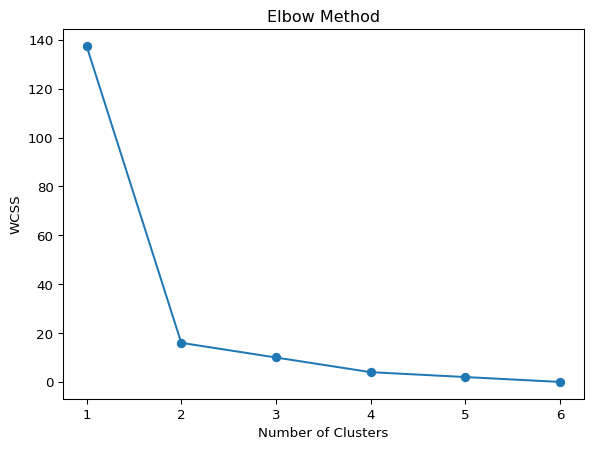
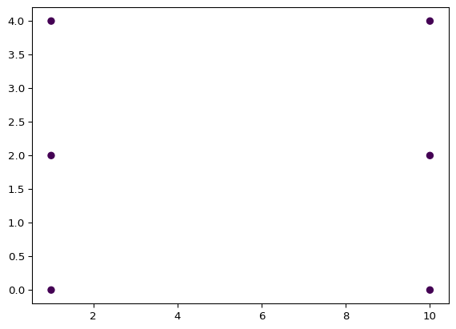

Unsupervised learning is a type of machine learning where the model identifies patterns or structures in data without labels. Unlike supervised learning, where the model is trained with input-output pairs, unsupervised learning works solely with input features to uncover structure.
4.1.1 Why Use It?
No labels are required
Ideal for exploratory analysis and large unlabeled datasets
Helps uncover hidden groupings, relationships, and outliers
4.1.2 Analogy
Think of unsupervised learning like exploring a city without a map. You don’t know what’s where, but you start grouping areas based on what you see—residential zones, commercial zones, parks, etc.
4.2 K-Means Clustering
4.2.1 What is K-Means?
K-Means is a popular clustering algorithm that partitions data into k distinct clusters, each represented by a centroid (the mean of the cluster points).
4.2.2 Use Cases
Customer segmentation
Fraud detection
Market segmentation
4.2.3 How It Works
Initialization: Choose k initial centroids randomly.
Assignment Step: Assign each point to the nearest centroid.
Update Step: Recalculate centroids as the mean of assigned points.
Repeat until convergence (no or minimal change in centroids).
Measures how well a point fits its own cluster vs others.
4.4.1.1 Formula:
s = (b - a) / max(a, b)
a = distance to points in the same cluster
b = distance to points in nearest cluster
from sklearn.metrics import silhouette_scorescore = silhouette_score(X, kmeans.labels_)print(score)
+1: well-clustered
0: on boundary
-1: likely misclassified
4.4.2 Elbow Method
Plots WCSS vs. k, looks for a point (“elbow”) where further increase in k has diminishing returns.
import matplotlib.pyplot as pltfrom sklearn.cluster import KMeanswcss = []max_clusters =min(10, X.shape[0]) for i inrange(1, max_clusters +1): kmeans = KMeans(n_clusters=i, random_state=0).fit(X) wcss.append(kmeans.inertia_)plt.plot(range(1, max_clusters +1), wcss, marker='o')plt.xlabel("Number of Clusters")plt.ylabel("WCSS")plt.title("Elbow Method")plt.show()

4.4.3 Elbow vs Silhouette
Metric
Use When
Elbow Method
Clear elbow point exists
Silhouette Score
When elbow is unclear or clusters are complex
4.5 DBSCAN: Density-Based Clustering
4.5.1 What is DBSCAN?
DBSCAN forms clusters based on density of data points, identifying core, border, and noise points.
4.5.2 Key Terms
Eps (ε): Neighborhood radius
MinPts: Minimum points to form a dense region
Core Point: ≥ MinPts in ε-neighborhood
Border Point: < MinPts but within ε of a core point
Noise: Not in any cluster
4.5.3 DBSCAN Steps
Identify core points using Eps and MinPts
Expand clusters from core points
Label non-core/non-border points as noise
from sklearn.cluster import DBSCANdb = DBSCAN(eps=0.5, min_samples=4).fit(X)print(db.labels_)# plot the clustersplt.scatter(X[:, 0], X[:, 1], c=db.labels_, cmap='viridis')plt.scatter(db.components_[:, 0], db.components_[:, 1], c='red', marker='x')plt.show()
[-1 -1 -1 -1 -1 -1]

4.5.4 Pros
No need to specify k
Handles arbitrary shaped clusters
Handles noise and outliers
4.5.5 Cons
Sensitive to Eps and MinPts
Struggles with varying densities
Less effective in high-dimensional data
4.5.6 Parameter Tuning
Plot k-distance graph to choose Eps
MinPts: at least D+1 (D = number of dimensions)
4.5.7 Applications
Geospatial analysis
Anomaly detection
Image segmentation
Genomic data clustering
4.6 Clustering with Hierarchical Clustering
4.6.1 What is Hierarchical Clustering?
Hierarchical clustering is a technique that builds a tree-like structure of clusters, known as a dendrogram. It doesn’t require the number of clusters to be specified upfront, unlike K-means. You start with each data point as its own cluster and progressively merge the closest clusters (agglomerative) or split clusters (divisive) until you reach a stopping point.
4.6.2 Types of Hierarchical Clustering
Agglomerative (Bottom-Up): Start with individual points as clusters, then merge the closest ones.
Divisive (Top-Down): Start with all points in one cluster and split it progressively.
4.6.3 Distance Metrics
To merge or split clusters, we need a way to measure distance. Common ones include: - Euclidean Distance: Think of it as measuring the straight-line distance between two points, like measuring the shortest path between two cities on a map. - Manhattan Distance: The sum of the absolute differences of coordinates, like driving along streets in a grid (no diagonals). - Cosine Similarity: Measures how similar two vectors are based on their direction, not magnitude, often used in text.
4.6.4 Linkage Criteria
This defines how we calculate the distance between clusters: - Single Linkage: Distance between two clusters is the shortest distance between any two points. - Complete Linkage: Distance is the longest distance between points. - Ward’s Linkage: Minimizes variance within clusters.
4.6.5 Example: Agglomerative Clustering
Imagine you have six points (A, B, C, D, E, F) and want to group them. Here’s how agglomerative clustering works:
Start with each point as a cluster: A, B, C, D, E, F.
Merge the closest clusters: (D, F) at distance 0.50.
Repeat: Merge (A, B) at distance 0.71.
Continue merging: Eventually, you’ll have one large cluster.
The merging process forms a dendrogram, which shows how clusters are joined at different distances.
This code generates a dendrogram that shows how points are merged.
4.6.7 Advantages
No need to predefine clusters: It can find the natural groupings in the data. Dendrogram visualization: Helps in deciding how many clusters to extract. Captures nested clusters: Useful for complex data structures. ### Disadvantages Computationally expensive: O(n³), so not ideal for large datasets. Sensitive to outliers: Especially with single linkage, outliers can cause chain-like clusters. ### Applications Gene Expression Analysis: Group genes with similar activity patterns. Customer Segmentation: Segment customers based on purchasing behavior. Document Clustering: Group similar text documents.
4.7 Final Notes
Always scale your features before clustering (StandardScaler or MinMaxScaler).
Try multiple initializations for K-means to avoid local optima.
Use Silhouette and Elbow methods for evaluation.
Use DBSCAN when clusters are non-spherical or you expect outliers.